Міністерство освіти і науки України Львівський національний університет
Факультет електроніки та комп’ютерних технологій
Звіт
До індивідуального завдання з теми:
«Бінування даних лінгвістичної статистики»
Виконав: Студент ФЕІм-14
Варіводін М.Д.
Перевірив:
Кушнір О.С.
Львів 2025
Зберегти словник у декількох форматах
Зберегти файл бінування у декількох форматах
Мета роботи: Написати програму для парсингу декількох текстових файлів і бінування отриманих даних.
Репозиторій: https://github.com/MaksimVarivodin/LanguageAnalysis/tree/UI_Functional_fix
Ключові зміни і вимоги:
1. Працездатність програми при різних масштабах екрану і різній роздільній здатності(100%, 125%, 150%, 175%)
2. Відкриття і парсинг текстів.
3. Створення словників для папок з текстами.
4. Розрахунок бінування словників за різними методами.
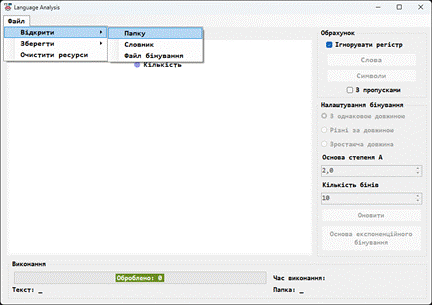
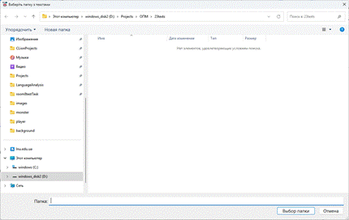
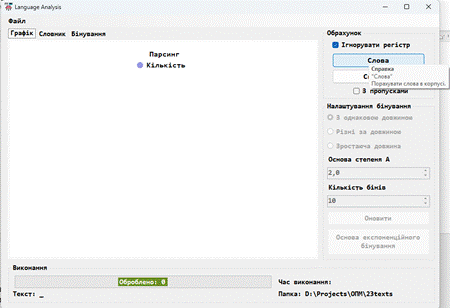
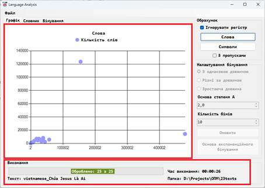
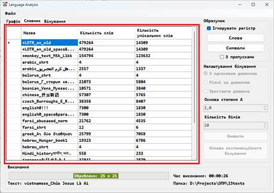
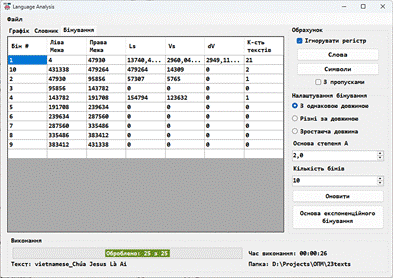
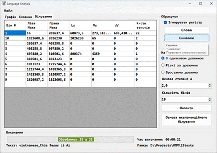
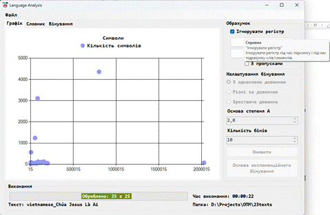
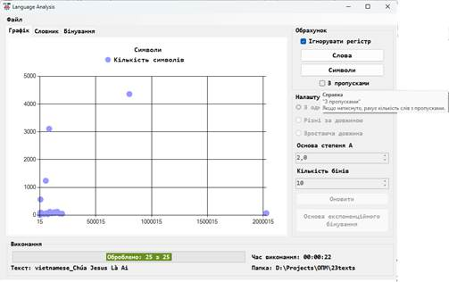
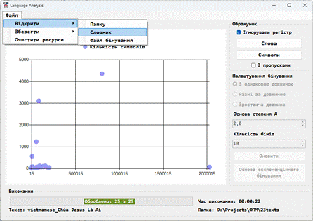
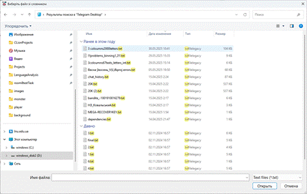
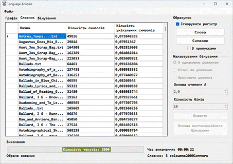
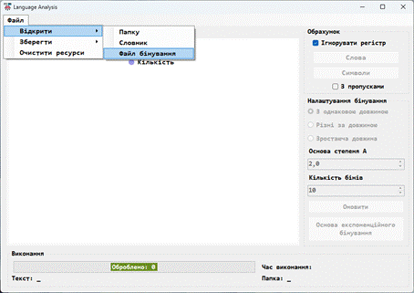
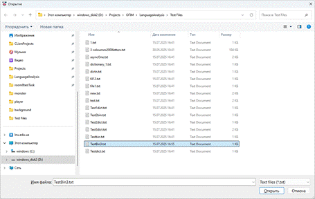
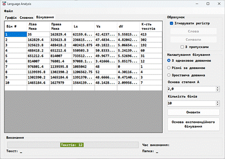
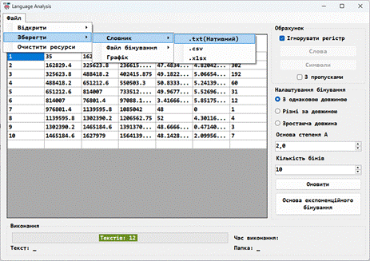
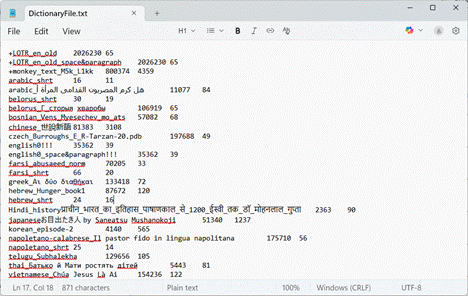
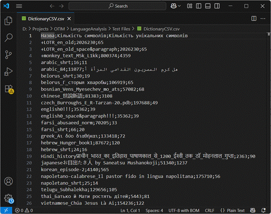
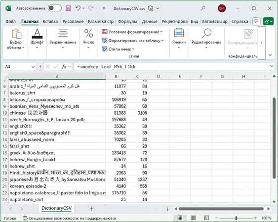
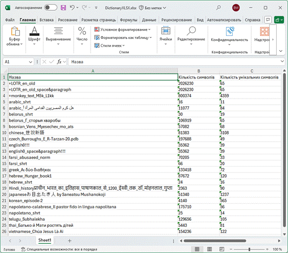
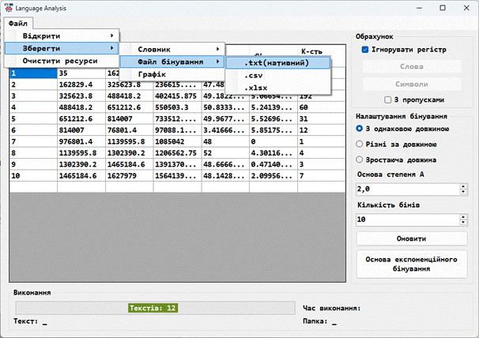
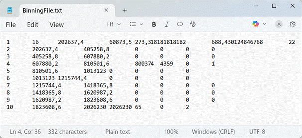
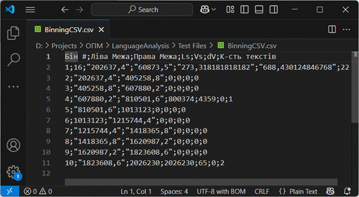
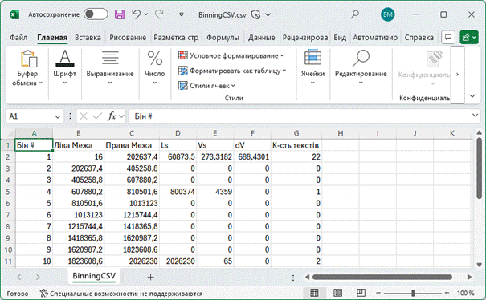
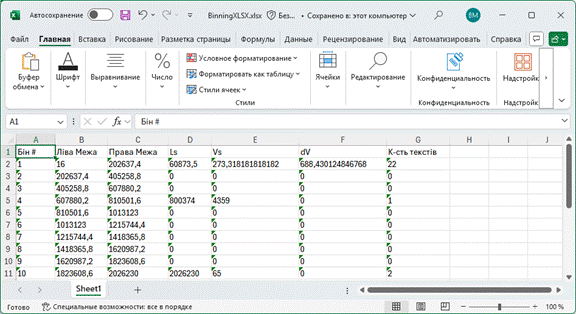
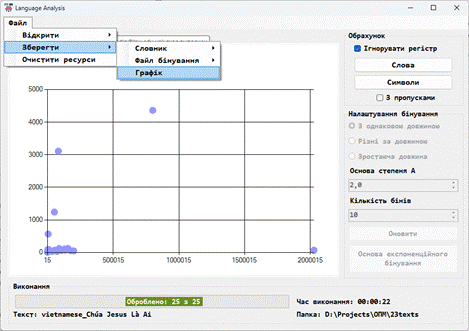 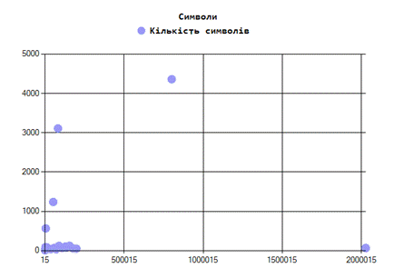